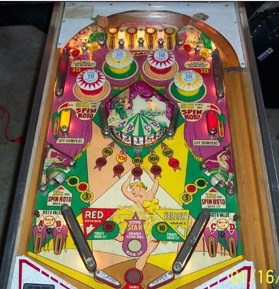

Not to be confused with Diamond Lady (Premier Gottlieb, 1987).
Top lanes score 50 points, or 100 when lit. 1-point switch hits alternate whether the 1st and 3rd lanes are lit, or the 2nd and 4th lanes are lit; it will always be one of these pairs.
Pop bumpers score 1 point, or 10 when lit. The red and yellow standup targets in the top corners of the game light the red and yellow pop bumpers, respectively. The middle side lanes score 50 points and unlight any lit bumpers; watch out for center drains on the exit feed from the middle side lanes. Lit bumpers are not turned off when the ball ends.
The center roto-target has panels reading 1, 2, 3, 4, 5, and Star. 5 panels of the roto-target are visible at any one time. Each visible panel has a yellow 10x and a red 10x in front of it. At any given time, exactly one panel will be lit with the red and/or yellow 10x insert. Hitting a red pop bumper or the left slingshot (whether they are lit or not) advances the red 10x, and hitting a yellow pop bumper or the right slingshot advances the yellow 10x. Hitting a visible roto-target panel scores the listed number (star counts as 1) times 10 or 100 if one of both 10x lights are lit in front of that target. 1-point switch hits alternate whether extra ball is lit; hitting the star panel of the roto-target awards extra ball when lit. The roto-target is spun by making an unlit top lane, either middle side lane, or a lit saucer. Draining down the out lanes scores whichever panel on the roto-target lines up with A, B, C, or D on the plastic above the roto (the 1st, 2nd, 4th, and 5th visible targets from left respectively).
Side saucers score 5, 10, or 15 points. Both saucers have the same value at all times. The lit value changes each time the roto-target is spun or when any roto-target panel is scored. If the red bumpers are lit, the left saucer will be lit alternately based on 1-point switch hits; the same happens to the right saucer if the yellow bumpers are lit. Lit saucers score 10x the displayed value and spin the roto-target.
Slingshots score 1 point, or 10 when lit. The left and right slingshots are lit when the red and yellow bumpers are lit respectively. There are no in lanes; two inch mini-flippers back up directly to the slingshots. The out lanes award whichever roto-target panel corresponds to A, B, C, or D. There is no end of ball bonus. Tilt ends the ball in play only. Maximum 1 extra ball per ball in play.
The below picture of Dancing Lady's playfield was taken from the Internet Pinball Database, where it was originally provided by Stephen M Schott.
